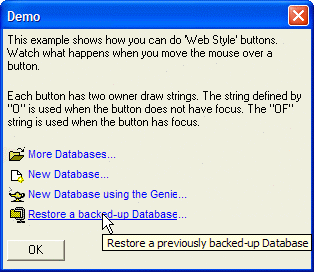

Button OF Directive
Syntax
%OF= [ {J= A } ] Text [ {I= N } ] Text %
|
Argument |
Type |
Description |
|
{J= A } |
C |
Optional. Label justification. "C" = centered |
|
Text |
C |
Button label text. |
|
{I= N } |
N |
Optional. Sequence number of image previously specified by a %I= Image_Name % directive. Inserted at any position. |
Description
The OF directive allows you to specify the formatting of a button's label when the button has focus. Normally, it would be paired with a O directive, which defines the button's label when the button does not have focus. When you have multiple directives in a Format string, you separate them with semi-colons ";".
Example
|
ui_dlg_box("Demo",<<%dlg% {wrap=60} This example shows how you can do 'Web Style' buttons. Watch what happens when you move the mouse over a button.; {lf}; Each button has two owner draw strings. The string defined by "O" is used when the button does not have focus. The "OF" string is used when the button has focus.; {lf}; <%B=N;T= Open an existing Alpha Five Database;O={J=L}{I:'$a5_open'}{c=Blue}{F=Arial,8} More Databases{F=arial,8}... ;OF={J=L}{I:'$a5_open'}{c=Blue}{F=Arial,8,u} More Databases{F=arial,8}... %!open_database>; <%B=N;T= Create a new Alpha Five Database;O={J=L}{I:'$a5_new'}{c=Blue}{F=Arial,8} New Database{F=arial,8}... ;OF={J=L}{I:'$a5_new'}{c=Blue}{F=Arial,8,u} New Database{F=arial,8}... %!new_database>; <%B=N;T= Create a new Database using the Genie to create the database from a template;O={J=L}{I:'$a5_genie_lamp'}{c=Blue}{F=Arial,8} New Database using the Genie{F=arial,8}... ;OF={J=L}{I:'$a5_genie_lamp'}{c=Blue}{F=Arial,8,u} New Database using the Genie{F=arial,8}... %!new_database_genie>; <%B=N;T= Restore a previously backed-up Database;O={J=L}{I:'a5_zip_small'}{c=Blue}{F=Arial,8} Restore a backed-up Database{F=arial,8}... ;OF={J=L}{I:'a5_zip_small'}{c=Blue}{F=Arial,8,u} Restore a backed-up Database{F=arial,8}... %!database_restore>; {lf}; <10OK>; %dlg%,<<%code% if a_dlg_button = "open_database" then ui_msg_box("Note","'open_database' was pressed.") else if a_dlg_button = "'new_database" then ui_msg_box("Note","'new_database' was pressed.") else if a_dlg_button = "new_database_genie" then ui_msg_box("Note","'new_database_genie' was pressed.") else if a_dlg_button = "database_restore" then ui_msg_box("Note","'database_restore' was pressed.") end if %code%) |

See Also
Xdialog Language Directives and Operators, Button %O% Directive, Button Syntax